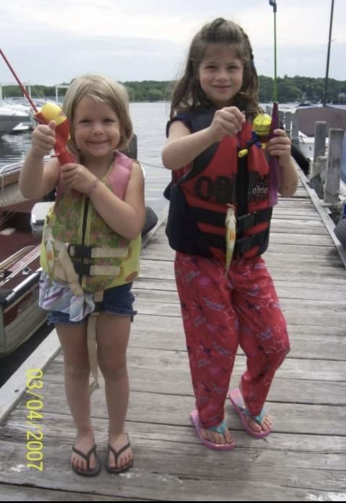
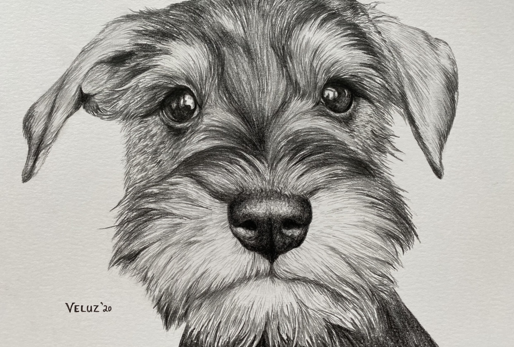
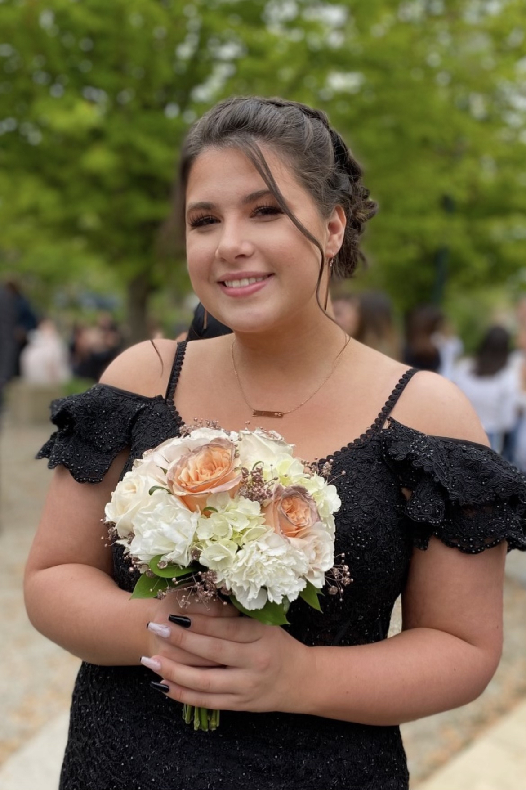
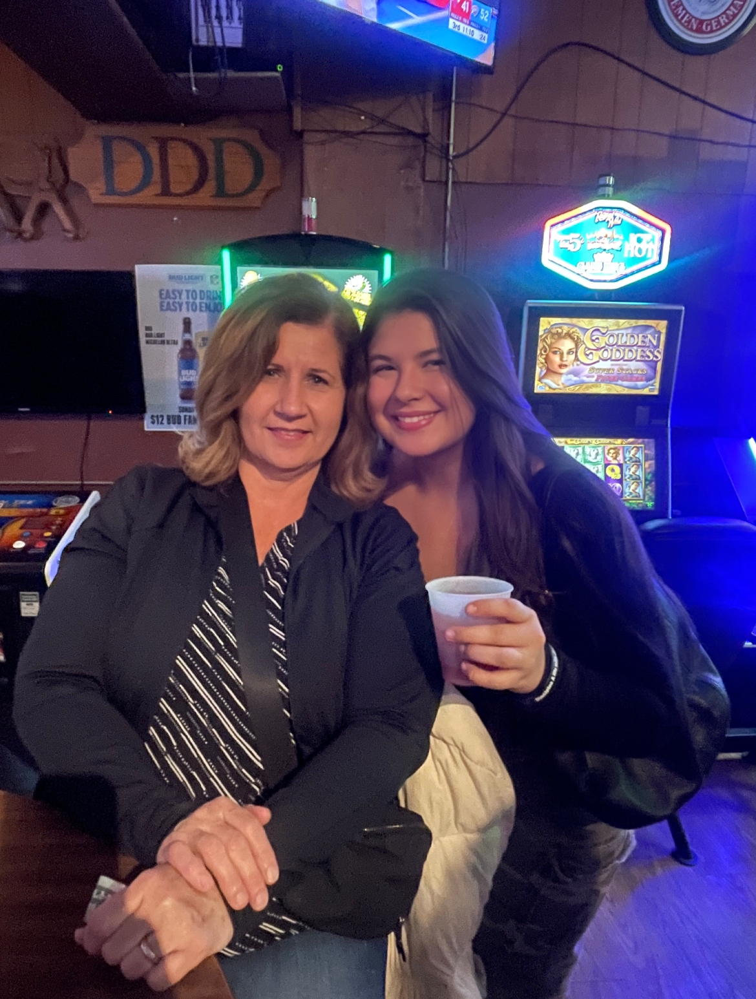
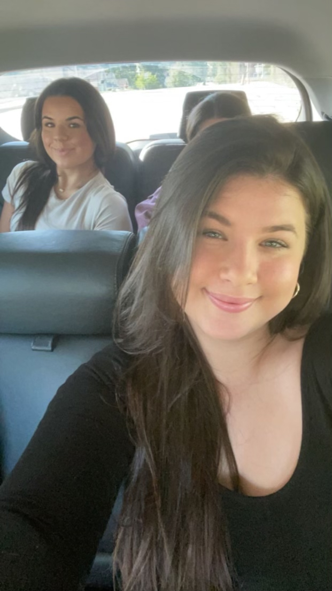
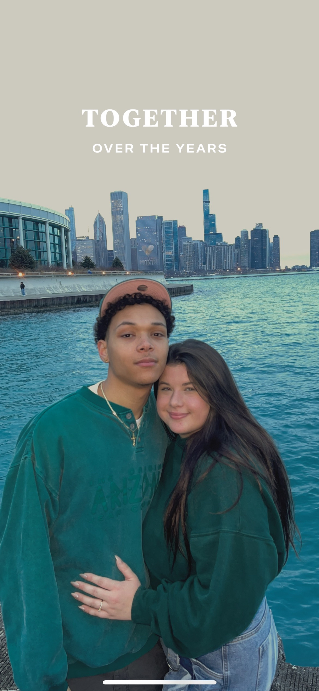

This is a photo of me when I was 5 years old
My cousin Grace and I catching fishing at the lakehouse
My dream when I was a little girl was to be a Vet. I grew up with my grandmother always telling me stories about how she had temperary pets. She would find hurt animals all the time on her daily walks. She would bring them home to treat and rehibilitate the animal which I thought was the coolest thing. I remember seeing photos and hearing stories about her pet squirls, racoons, birds and pretty much any other animal she found that needed help. She has always been fearless, purhearted, strong and is best women I have ever met to this day. I have always been envious of my grandma because she is actually perfect. After realizng I wanted to be just as kind as she was, figuring out my dream was not hard at all when I was little.
 When I was younger I had a pet Schnauzer. Her name was Zoe. I could not find any photos so I found this drawing online that is identical to what she looked like.

A photo of me from my Prom
This is a photo of my mom and I on my 21st birthday
My sister and I
As I grew up I started realizing the meaning of life and how to live happy. Dreams were not just the career path I wanted but what I wanted out of my life over the years. With time a lot has changed but I look at the world so different. In college I tried being a Vet, then a nurse, then I fell on being a buisness major because I had no idea what career I wanted. I found Cybersecurity and immediatly knew it was for me. My classes got interesting and enjoyable to go to. Learning about something I love in depth to build my dreams from nothing to something. My current dream is to start my life with a career in Cybersecurity.
This is Reggie, he is a white tree frog. I have owned him for about a year now. Sill very scared of him sometimes but will adjust with time , hopefully.
 This is a photo of my boyfried of 5 years and I
In 5 years I hope to be out of college with a degree in Cybersecurity. Working remote at a really nice company. My goals are to work from home and flip houses in my free time. I want to redo houses and make them into homes for other people. I would live in the house while I flip it then once I am done move to the next house and restart the process. I think this is a great opprotunity to learn how to grow with my boyfriend as well as to grow financially together for our future.
In 10 years from now I will be about 31. I hope by then I have a little family of my own in a beautiful house. I hope to be financially stable so I can provide the best life for my family. I want my kids growing up and making memories with the family that they will cherrish forever. I dream for no financial stress by the time I am this age.
In 20 years hopefully my family has grown larger because factory closes for me at 45. I still want to travel and live my life with my hopefully husband. I want my kids to be well out of high school by the time I am 60 years old. My goals are to be as kind to everyone to give off the same attitude and persona as my beautiful grandmother did. That has always been my real dream my whole life.